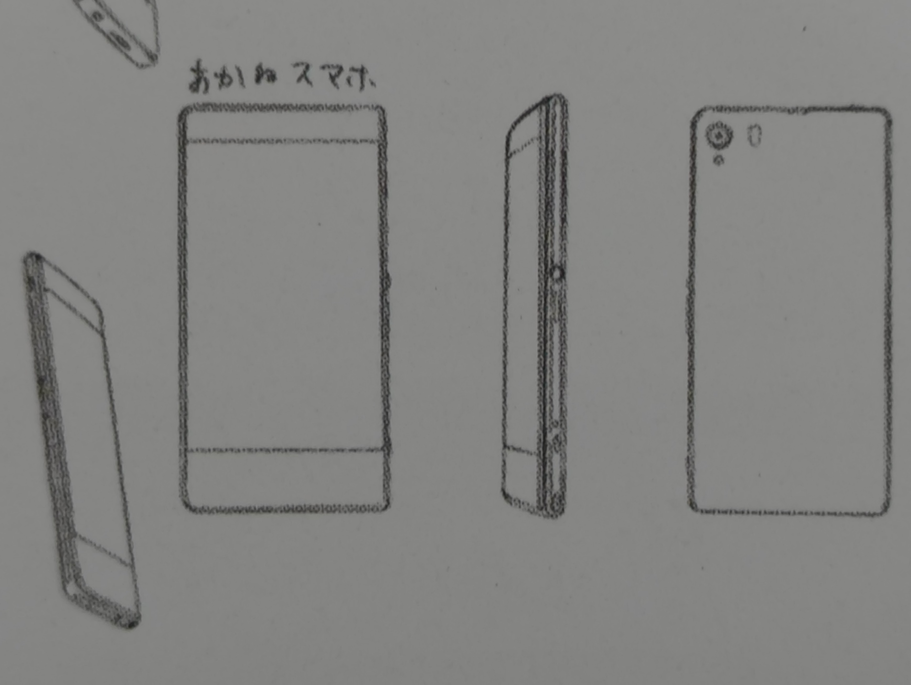
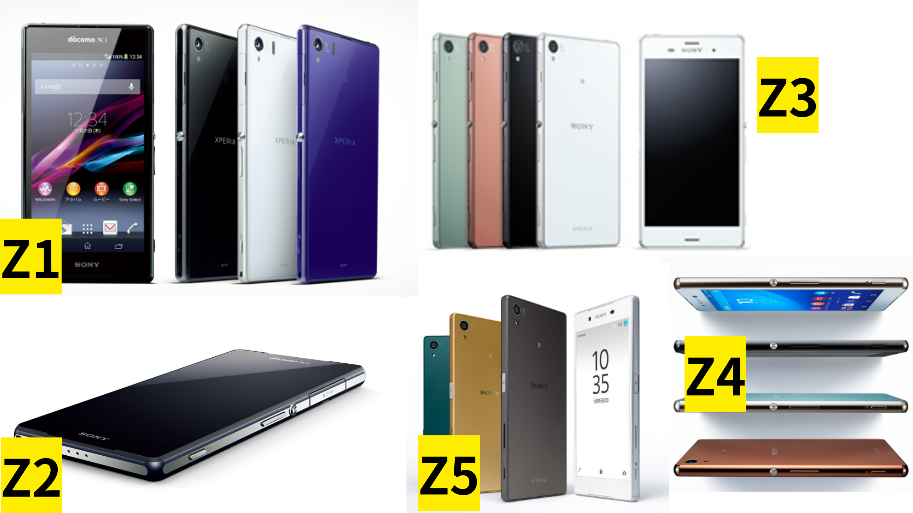
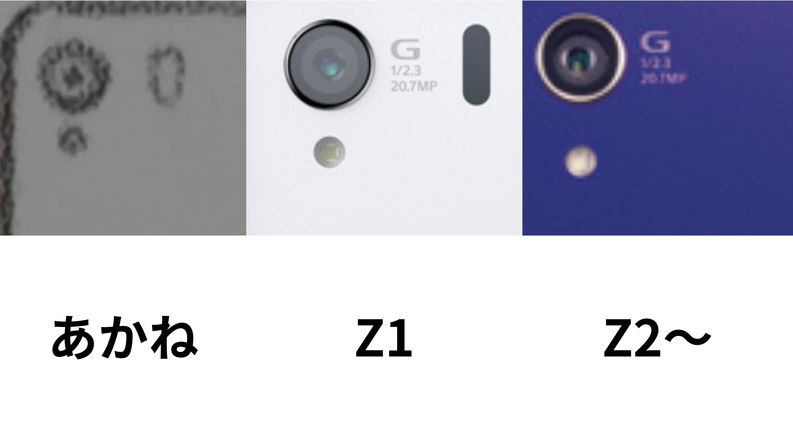

あかねさんのスマホは....？
高座渋谷のハードオフで880円で購入したゆるゆりなちゅやちゅみの初回限定盤に付属していた資料集みたいなやつを見ているとこんなものを目にした。

▲ 記載されていた赤座あかねが作中で使用していたと思われるデバイス
あかねさんのスマホXperiaじゃね？
丸形の電源ボタンにシャッターボタン...紛れもない昔のXperiaだった。
ということでこのデバイスがXperiaの何と一番近いのか考えたり調べたりすることにした。調べる前に今私が持っている知識でおおよその推測をするとこれはXperiaのZシリーズだ。
まず、この丸い形をした電源ボタンの形状を考慮すると、Xperia Z1～Z4だと考えられる。Z5からは丸形の電源ボタンから縦長の指紋認証に対応したものになっている。

▲ Z1～Z5のソニーストアに載せられていた画像を私がまとめたもの
とりあえずこの段階でZ1からZ4までだと絞ることができた。次に私が注目したのは、カメラ周りだ。

▲ カメラ周りの比較のため、あかね、Z1、Z2を私が並べた画像。画像は価格.comのもの。
Z1とあかねさんのデバイスにはカメラの横に黒くて棒状？の印がある。これがいまいち何なのかわからないが、Z2からは見当たらなくなっている。
以上のことから、あかねさんのスマホはXperiaZ1だということがわかった。
一応補足？として言っておく。ここまできてこんなことを言うのは申し訳ないが、まだなちゅやちゅみの本編を一回しか見たことがなく、この資料集みたいなものからしかあかねさんのスマホの情報は得られず、信頼性は期待しないほうが良い。なにか反例？があれば私のXにDMやらリプやら送って知らせてほしい。
じゃあXperiaZ1ってどんなスマホ？
SONYが2013年秋に発売した当時の最上位機種であり、2014年秋のゆるゆりなちゅやちゅみの時点では一年前の最上位機種ということになる。当時の価格はだいたい8万くらいらしい。当時のiPhone5sとは6、7000円違いだったらしい。このXperiaZ1の強みはカメラらしく、SONYのコンパクトデジタルカメラ並の性能だったらしい。シスコンなあかねさんはこの当時としては高画質なカメラであかりを撮っていたのだろうか.....あまり模索しないでおこう。